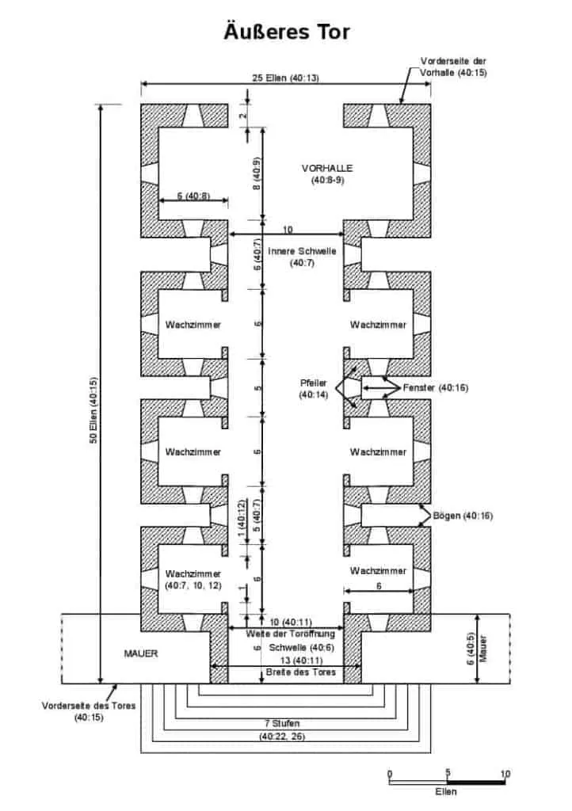

Gott macht uns in seinem Wort deutlich, wie wichtig ihm Gerechtigkeit ist. Er, der gerechte Gott, kann Ungerechtigkeit nicht tolerieren. Dies zeigt uns auch das äußere Tor des Tempels, das im Propheten Hesekiel beschrieben wurde.
Ein Tor der Gerechtigkeit
In Jesaja 26:9-10 wird deutlich, wie Gott mit denen umgeht, die gesetz- und gottlos leben.
“Meine Seele verlangte nach dir in der Nacht, ja, mein Geist in mir suchte dich; denn sobald deine Gerichte die Erde treffen, lernen die Bewohner des Erdkreises Gerechtigkeit. Wird dem Gottlosen Gnade erwiesen, so lernt er nicht Gerechtigkeit; in dem Land, wo Ordnung herrscht, handelt er verkehrt und sieht nicht die Majestät des Herrn.”
Jesaja 26:9-10
Gott, der Herr, bringt seine Gerechtigkeit auf diese Erde, ob der Mensch es annimmt oder sich dagegen wehrt. Gottes Gericht ist gerecht, er wird jeden Menschen an seinem göttlichen Maßstab messen. Auch für uns Gläubige gibt es einen Maßstab, den wir zu erfüllen haben. Davon spricht Jesus in Matthäus 5:20:
“Denn ich sage euch: Wenn eure Gerechtigkeit die der Schriftgelehrten und Pharisäer nicht übertrifft, werdet ihr gewiss nicht in das Reich der Himmel kommen.”
Matthäus 5:20
Gott der HERR, hat also einen hohen Standard gesetzt. Deshalb müssen wir uns die Frage stellen, ob wir diesen erfüllen. Liest man zum Beispiel Psalm 118:19-20, so wird deutlich, dass nicht alle durch das Tor ins Innere des Tempels Gottes hineingehen, sondern nur die Gerechten.
“Öffnet mir die Tore der Gerechtigkeit, dass ich durch sie einziehe und den HERRN lobe. Dies ist das Tor des HERRN; die Gerechten werden dort einziehen.”
Psalm 118:19-20
Ein weiterer Aspekt ist, dass der Tempel mit dem Lob Gottes gefüllt ist. Je weiter wir als Gläubige also ins Innere vordringen, desto mehr werden wir ihn loben.
Zwei Aspekte unserer Errettung
Die Tiefe der Schwelle des Tores beträgt 6 Ellen, den verbleibenden Rest mit einer Länge von 44 Ellen gilt es hindurchzulaufen, möchte man ins Innere vordringen. Dies ist ein wichtiges Bild. Bei der ersten äußeren Schwelle geht es um die anfängliche Errettung, jeder, der diese Schwelle hinaufgeht, glaubt und hat gründlich für seine Sünde Buße getan. Jeder, der also den Herrn Jesus aufnimmt steht in der Schwelle des Tores und hat das Errettungswerk Christi angenommen.
In diesem Zusammenhang ist es interessant, dass die Schwelle 6 Ellen tief ist. Die Zahl 6 ist die Zahl des Menschen. Als Jesus als Mensch auf die Erde kam, hat er die ganze gerechte Forderung des Gesetzes als Mensch, und nicht als Gott, erfüllt. Dies zeigt die Zahl 6. Wer konnte damals von den Menschen Gottes Gebote halten? Alle Menschen – außer Jesus Christus – sind durchgefallen. Nur weil Jesus das Gesetz erfüllte, konnte dieses Tor für uns geöffnet werden und wir sind gerecht gemacht.
Warum gibt es dann aber noch 44 restliche Ellen, um die Tempelanlage betreten zu können? Das Tor zeigt uns, dass es zwei Aspekte der Errettung gibt. Der erste ist unsere anfängliche Errettung, wo wir Jesus in unser Leben aufnehmen und uns unsere Sünden vergeben werden. Dies ist jedoch erst der Anfang, denn unser Christenleben besteht hauptsächlich aus dem, wie es danach weitergeht. Und dies zeigen die verbleibenden 44 Ellen. Denn unser ganzes Leben braucht eine fortschreitende Errettung, das heißt eine tiefere, substantiellere Umwandlung unseres Wesens. Würden wir sonst nicht schon allezeit den Willen Gottes tun, nie mehr rebellieren und allezeit im Gebet mit Gott verbunden sein? Die Erfahrung zeigt, dass wir in vielen Punkten noch Errettung benötigen. Wir schleppen nach unserer Wiedergeburt noch viele gewohnheitsmäßige, aber auch verborgene Sünden mit uns herum. Deshalb gibt es noch 44 weitere Ellen, um am Ende aufs Völligste errettet zu werden.
Dies hat auch Paulus erkannt, deshalb schreibt er in Philipper 2:12-13:
“Daher, meine Lieben, wie ihr ja allezeit gehorsam gewesen seid, bewirkt eure eigene Errettung mit Furcht und Zittern bis zur Vollendung, … denn Gott ist es, der in euch beides wirkt, das Wollen und das Wirken, für sein Wohlgefallen.”
Philipper 2:12-13
Wir sollen unsere Errettung also verwirklichen. Die anfängliche Errettung können wir nicht aus uns selbst heraus verwirklichen, sondern es ist Gottes Gnade. In unserem weiteren Christenleben aber sollen wir durchaus selbst unsere Errettung verwirklichen, indem wir im Bild gesprochen durch das Tor hindurchgehen. Gott hilft uns aber dabei, wenn wir willig sind und mit ihm zusammenarbeiten. Er wird uns durch viele Prüfungen führen, die uns zur Errettung dienen. Dies sieht man an den Wachzimmern: Es gibt 6 Zimmer, von jeder Seite wird man dabei immer doppelt beschaut. Das Durchschreiten dieses Tores beschreibt somit einen Prozess, der unser ganzes Leben andauert. Wir erleben nicht nur eine Prüfung, sondern es braucht mehrere, um wirklich ganz errettet zu werden. Dieser Prozess erfordert unsere Zusammenarbeit mit dem Herrn.
Hierzu spricht Paulus in Philipper 3:12-14:
“Nicht, dass ich es schon ergriffen habe oder schon vollendet bin; ich jage aber nach, ob ich auch ganz ergreife, wozu ich auch von Christus Jesus ganz ergriffen worden bin. Brüder, ich schätze mich selbst noch nicht so ein, dass ich es ganz ergriffen habe. Eines aber tue ich: Ich vergesse ständig, was dahinten ist, und strecke mich aus nach dem, was vorn ist, und so jage ich dem Ziel entgegen für den Kampfpreis der nach oben gerichteten Berufung Gottes in Christus Jesus.”
Philipper 3:12-14
Dies ist eine gesunde Haltung, ständig dem Ziel entgegen und nachzujagen. Möge der Herr uns dies in den Sinn geben, dass wir uns allezeit nach dem ausstrecken, was vorne ist und alles andere hinter uns zu lassen, um das Ziel zu erreichen. Denn wenn unser Leben zu Ende ist oder Jesus Christus zu unserer Lebzeit wiederkommt, dann müssen wir am Ende des Tores angelangt sein.
Zwei Schwellen auf dem Weg durchs Tor
Es gibt zwei Schwellen im Tor: Eine äußere und eine innere. Dies zeigt auch die folgende Zeichnung des äußeren Tores.


Haben wir die äußere Schwelle genommen, so gibt es immer noch eine innere. Während bei der ersten unser Geist von neuem geboren wurde, braucht es eine zweite für die Errettung unserer Seele. Das Endziel unseres Glaubens ist also die Errettung der Seele wie auch 1. Petrus 1:9 sagt:
“die ihr das Ziel eures Glaubens erlangt, die Errettung eurer Seele;”
1. Petrus 1:9
Die Apostel haben dieses Ziel des Glaubens, die innere Schwelle, gesehen. Hierauf sollte unser Fokus liegen, nämlich unsere Seele in unserem täglichen Leben erretten zu lassen, indem wir dem Geist Raum geben, damit er in uns wirken kann.
Ausauferstehung aus den Toten
Es muss ständig weitergehen in unserem Christenleben, wir dürfen nicht stehenbleiben. Denn was kommt nach der inneren Schwelle? Die Vorhalle, sie ist 8 Ellen tief. Die Zahl 8 zeigt die Auferstehung, denn Jesus ist am achten Tag, dem ersten Tag der Woche aus den Toten auferstanden. Wie auch er aus den Toten auferstanden ist, soll dies auch zu unserer Wirklichkeit werden. Dies beschreibt Paulus in Philipper 3:10-11:
“um ihn zu erkennen und die Kraft seiner Auferstehung und die Gemeinschaft seiner Leiden, indem ich seinem Tod gleichgestaltet werde, ob ich irgendwie zur Ausauferstehung aus den Toten gelange.”
Philipper 3:10-11
Paulus hatte das Verlangen, zur Ausauferstehung aus den Toten zu gelangen. Er hat den Weg von der anfänglichen Errettung in Form der äußeren Schwelle bis hin zur inneren Schwelle und der Vorhalle vor Augen.
Mögen wir alle das Ziel des Glaubens, die Errettung der Seele und die Ausauferstehung aus den Toten mit der Hilfe des Herrn erreichen.